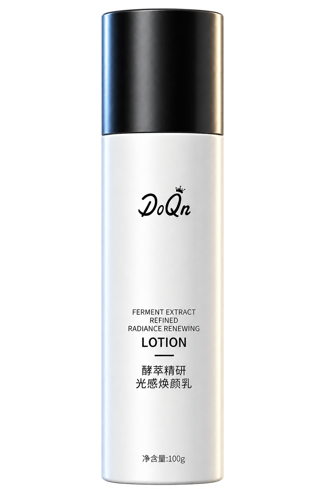

保湿、紧致、舒缓备案功效。

GLOW CARE / 212
轻盈一抹，
焕出细腻光感。
以轻盈乳液质地，衔接日常保湿与护肤步骤。
光感焕颜乳 · 100 g · 日常护肤使用
备案功效保湿、紧致、舒缓备案功效。
售价信息待核实
核心卖点
光感焕颜乳 · 依据现有产品资料整理
乳液质地，兼顾日常保湿与轻盈肤感。
配方含烟酰胺、5种神经酰胺、银耳子实体提取物与麦角硫因。
可衔接化妆水与精华步骤，具体顺序以包装说明为准。
主要成分与护理搭配
从配方信息到日常步骤，清晰呈现
配方信息
- 烟酰胺与5种神经酰胺
- 银耳子实体提取物与麦角硫因
护理搭配
- 01洁面
- 02化妆水与精华
- 03光感焕颜乳
具体使用方法与注意事项以产品备案资料和包装说明为准。
功效与成分信息依据对应产品备案资料；产品为日常护肤品，不是药品。实际肤感因人而异，具体功效、使用方法与注意事项以备案资料及包装说明为准。价格信息待核实。